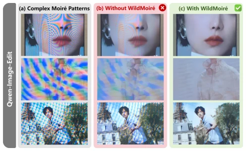
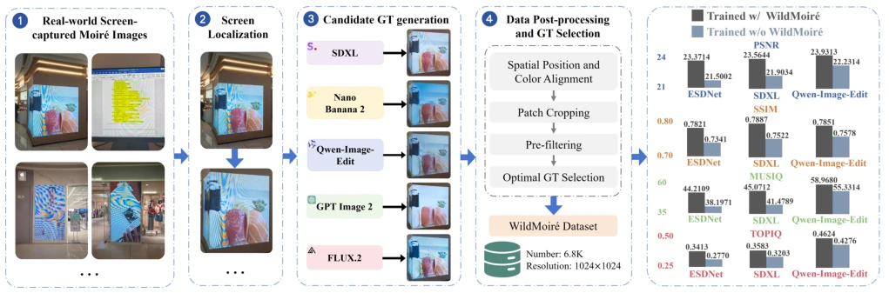
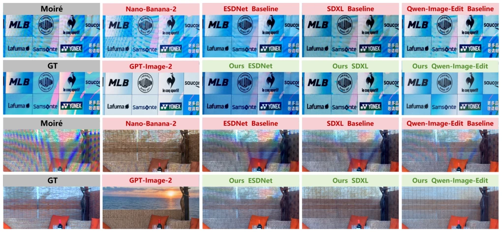

这篇论文试图用生成模型“造假”真值来训练去摩尔纹模型，思路挺“野”。现有数据集（如 UHDM, DCID）多受控，缺乏真实复杂场景，而获取真实干净图又太难。作者用 5 个 Foundation Model 生成候选，再过滤选优。虽然解决了数据匮乏问题，但本质是“以假乱真”，生成模型的幻觉风险并未根除，只是被过滤了。对于具身智能的数据构建，这种利用多模型互补的思路值得借鉴，但别指望直接迁移到机器人控制。数据量 6.8K 看着还行，但分辨率 1024x1024 在移动端可能有点大。总之，是个聪明的 CV tricks，但离真正的“智能”还有距离，且依赖大量算力。
This paper attempts to 'fake' ground truth using generative models to train a demoiréing model, a rather 'wild' approach. Existing datasets (e.g., UHDM, DCID) are mostly controlled, lacking real-world complex scenarios, while acquiring real clean images is extremely difficult. The authors utilize 5 Foundation Models to generate candidates, followed by filtering and selection. Although this addresses data scarcity, the essence is 'passing off fake as real'; the hallucination risk of generative models is not eradicated but merely filtered. For embodied intelligence data construction, this strategy of leveraging multi-model complementarity is worth emulating, though one should not expect direct transfer to robot control. The dataset size of 6.8K appears acceptable, but the resolution of 1024x1024 may be somewhat large for mobile devices. In conclusion, it is a clever CV trick, yet still distant from true 'intelligence', and relies heavily on substantial computational resources.
研究动机Motivation
拍摄屏幕产生摩尔纹是日常痛点，但现有方法泛化性差。Liu et al. 2018 指出条纹源于传感器与屏幕网格干涉。现有数据集（Sun et al. 2018; He et al. 2020; Yu et al. 2022; Mei et al. 2025）多受控，缺乏真实复杂场景（如大屏、网络图）。获取对应干净真值（GT）极难，因为大屏内容动态变化或网络图无源。直接收集数据成本高，合成数据失真。生成模型（OpenAI 2026; Google DeepMind 2026）虽强但易幻觉。本文旨在解决复杂摩尔纹缺乏可靠监督的问题，利用生成模型作为离线监督生产者，而非直接推理工具。现有方法（Sun et al. 2018; He et al. 2020）依赖配对数据，泛化性差，尤其在大规模多色条纹上表现不佳。
Capturing screens that produce moiré patterns is a daily pain point, yet existing methods suffer from poor generalization. Liu et al. 2018 indicated that stripes stem from interference between sensors and screen grids. Existing datasets (Sun et al. 2018; He et al. 2020; Yu et al. 2022; Mei et al. 2025) are mostly controlled, lacking real-world complex scenarios (such as large screens, network diagrams). Acquiring corresponding clean ground truth (GT) is extremely difficult, as large screen content changes dynamically or network diagrams lack sources. Direct data collection is costly, and synthetic data suffers from distortion. While generative models (OpenAI 2026; Google DeepMind 2026) are powerful, they are prone to hallucinations. This paper aims to address the lack of reliable supervision for complex moiré patterns by leveraging generative models as offline supervision producers, rather than direct inference tools. Existing methods (Sun et al. 2018; He et al. 2020) rely on paired data with poor generalization, performing inadequately especially on large-scale multi-color stripes.

Figure 1: Results on moiré images. The (a) column presents three moiré inputs with large-scale chromatic bands and over- lapping interference patterns. The (b) and (c) columns show Qwen-Image-Edit trained without and with our constructed WildMoiré dataset, respectively. Training only on the previ- ous dataset leaves artifacts and suppresses details, while in- corporating WildMoiré removes the broad interference and preserves original contents better.
The overall workflow is divided into five steps: 1. Collect screen images containing complex stripes and locate regions using Sa2VA; 2. Generate candidate GT using 5 generative models (GPT-Image-2, Nano-Banana-2, SDXL, FLUX.2, Qwen-Image-Edit); 3. Perform spatial and photometric alignment (GlueStick, FlowFormer); 4. Pre-filter based on texture complexity (σimg, σlap) and ESDNet response; 5. Select the optimal candidate as GT using A-FINE scoring. Additionally, scale transformation augmentation is introduced. Multi-model complementarity avoids single-model bias. Specifically, GPT-Image-2 has strong demoiréing capabilities but tends to alter content, Nano-Banana-2 preserves content but has weak demoiréing, while open-source models fall in between. Filtering is conducted via an A-FINE threshold (τ=15) to ensure candidates are significantly superior to inputs. Specifically, A-FINE combines fidelity and naturalness, adapting to imperfect references. Scale transformation increases moiré scale diversity through random upsampling. Ultimately, 6.8K pairs are retained, with GPT-Image-2 accounting for 62.73%, demonstrating its dominant role.

Figure 2: Overview of WildMoiré dataset construction. We first collect real screen-captured images containing complex moiré and localize the display regions. Five image-conditioned generative models then produce candidate GT images. The candidates are processed at matched spatial locations through spatial and color alignment, synchronized patch extraction, pre-filtering, and optimal GT selection. This offline procedure yields 6.8K moiré-GT pairs at 1024×1024 resolution. The plots on the right summarize the improvements obtained by training ESDNet, SDXL, and Qwen-Image-Edit with constructed WildMoiré dataset.
The WildMoiré dataset (6.8K pairs) was constructed, along with a separate test set of 247 pairs of real GT. Fine-tuning was performed on ESDNet, SDXL, and Qwen-Image-Edit. Metrics include PSNR, SSIM, LPIPS, as well as MUSIQ and TOPIQ. Results in Table 3 demonstrate improvements across all metrics. Ablation studies (Tables 4-6) validate the effectiveness of multi-model complementarity, scale augmentation, and threshold selection (τ=15). Compared to purely commercial models, this method achieves a better balance between fidelity and perceptual quality. Improvements were also observed on complex samples from UHDM and DCID, verifying generalization. Specifically, ESDNet achieved a PSNR improvement of 1.87dB on WildMoiré, and SDXL improved by 1.66dB. Commercial models such as GPT-Image-2, while having high perceptual scores, exhibit low fidelity; this method balances both aspects.

Figure 3: Comparison of qualitative results. The first example emphasizes logo and text fidelity under broad color interference, while the second contains severe mixed chromatic patterns over fine scene textures. Nano-Banana-2 is relatively content-faithful but may retain moiré, whereas GPT-Image-2 removes artifacts aggressively while replacing scene content and producing an overly digital-image appearance. Using WildMoiré suppresses residual bands more effectively across all 3 trainable models.